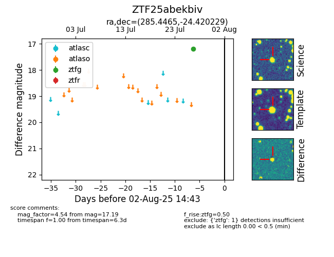

Target ZTF25abekbiv at 2025-08-02 14:43, see:
FINK: fink-portal.org/ZTF25abekbiv
Lasair: lasair-ztf.lsst.ac.uk/objects/ZTF25abekbiv
ALeRCE: alerce.online/object/ZTF25abekbiv
alt names
ZTF25abekbiv (ztf,fink)
coordinates:
equatorial (ra, dec) = (285.4465,-24.42023)
galactic (l, b) = (11.9299,-13.00834)
photometry
last ztfg=17.19
1 ztfg detections
